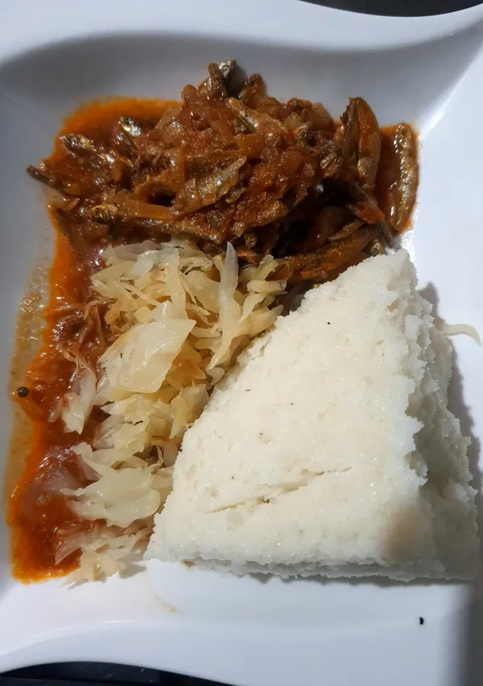

Home
Omena

Description
Crispy sun-dried omena fried golden with onions, tomatoes, and a fiery pilipili kick — bold, smoky, unforgettable. Pairs perfectly with ugali or rice for a true taste of home. Simple, satisfying, and always a favorite!
Ingredients
- 250 grams omena (dried silver cyprinid or dagaa)
- 2 large onions
- 3 finely chopped tomatoes, diced or grated
- minced 1-2 grain chilies (optional, for heat)
- Juice of 1 lemon or line
- Salt to taste
- Cooking oil(enough for frying
- Fresh coriander (dhaniaI for garnish
- 2 cloves garlic
- 1 Cup milk or sour milk(optional for creaminess)
Steps
- Cleaning the Omena:
Rinse the omena thoroughly under cold water to remove any dirt or sand. If the omena is very salty, you might want to soak it in warm water for about 10 minutes before rinsing again. Drain well.
- Frying the Omena:
Heat oil in a large frying pan over medium heat. Once hot, add the omena and fry until they are crispy, which should take about 5-7 minutes. Be careful not to burn them. Remove the omena from the oil and set aside on paper towels to drain excess oil.
- Cooking the Base:
In the same pan, add a bit more oil if needed. Add the chopped onions and sauté until they are golden brown.
Add minced garlic and green chilies, cooking for another minute until fragrant.
- Adding Tomatoes:
Stir in the diced or grated tomatoes. Cook until the tomatoes break down and form a thick sauce. This might take about 5-7 minutes.
- Combining Everything:
Return the fried omena to the pan, mixing well with the tomato and onion mixture.
Add salt to taste.
If you're using milk, pour it in now for a creamy texture, stirring well to combine. Let it simmer on low heat for about 5 minutes for the flavors to meld.
- Finishing Touches:
Squeeze in the lemon or lime juice for some zest.
Garnish with chopped fresh coriander.
- Serving:
Serve hot with ugali (a maize meal staple), rice, or chapati. It's also great with a side of sukuma wiki